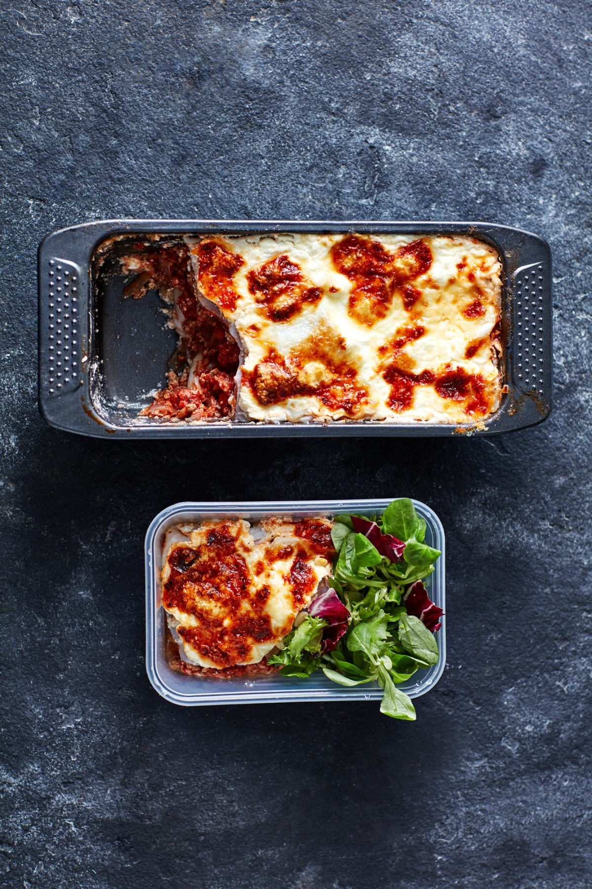

Are you craving lasagne, but dont want to make a whole tray of the stuff?
Try Loaf Tin Lasagne! You'll get 4 easy portions for 4 days' worth of meal
prep.
This loaf tin lasagne makes the ultimate high-protein meal prep for when
you're craving your favourite comfort food.
Ingredients
- 1tsp. coconut oil
- 1 white onion, coarsely chopped (or 1tbsp. onion powder)
- 2 cloves garlic, finely chopped (or 1tsp. garlic powder)
- 1tbsp. dried oregano
- 350g turkey mince
- 600g chopped tomatoes or tomato passata
- 300g lasagne sheets
- 1 courgette
- 1tsp. sea salt and black pepper
- 400g cottage cheese
- 3 egg whites
- 100g low-fat cheese (grated)
Creating the dish
-
First, make your turkey ragu. Add the coconut oil to a pan on a medium
to high heat. Add the onion and sauté for 3-4 minutes, then add the
garlic and sauté for a further 2 minutes (if you're using the powdered
versions, add them after the next step).
-
Next, add the turkey mince and break it up a little using a spatula,
then allow it to brown for 3-4 minutes, stirring occasionally. Stir in
the oregano, ½ tsp. salt and pepper and the tomatoes and simmer on a
low heat for 10 minutes.
-
While you're waiting, whisk cottage cheese and egg whites together in
a bowl using a fork with the remaining salt and pepper. Set aside.
Preheat the oven at 200°C or 180°C for fan-assisted.
-
Now prepare your courgette and lasagne sheets. Use a vegetable peeler
to slice the courgette lengthways to get long slices. Wash the lasagne
sheets under cold water in a colander.
-
Once the turkey ragu is ready, it's time to make up the lasagne. Start
with a layer of courgette sheets for easy removal once cooked. Then
alternate between the ragu, cheese sauce, lasagne sheets, and
courgette. Finish with a layer of lasagne, then cheese sauce, then
sprinkle with low-fat cheese.
-
Bake for 15 minutes with foil on, then remove the foil, turn the heat
up by 20°C and bake for a further 20 minutes. Once cooked, divide into
four meal prep containers, serve with your favourite salad or
vegetables and store in the fridge for up to three days.
Nutrional Facts (amount per serving)
| Calories |
556 |
| Total Fat |
13g |
| Total Carbohydrates |
66.7g |
| Protein |
46.3g |